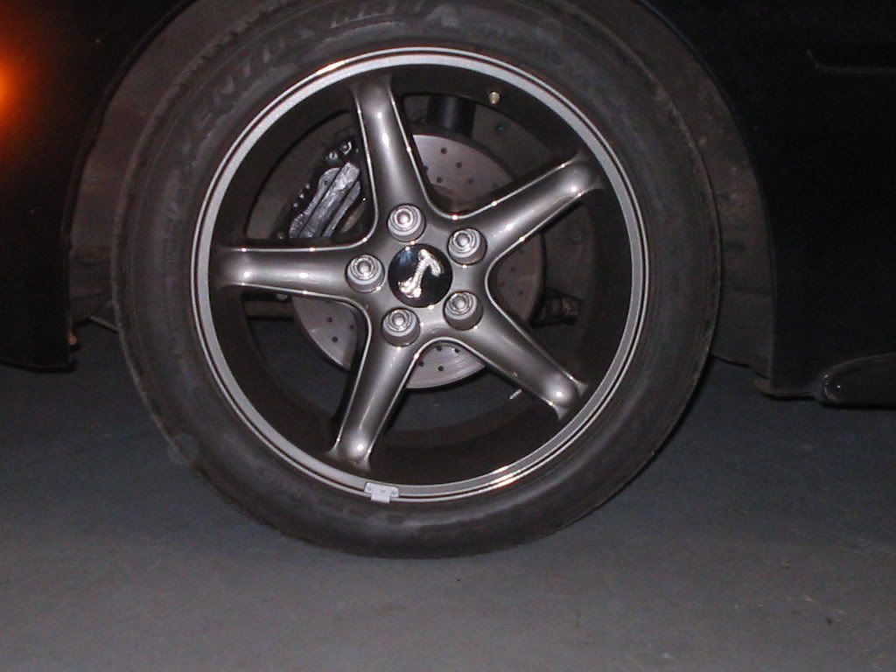
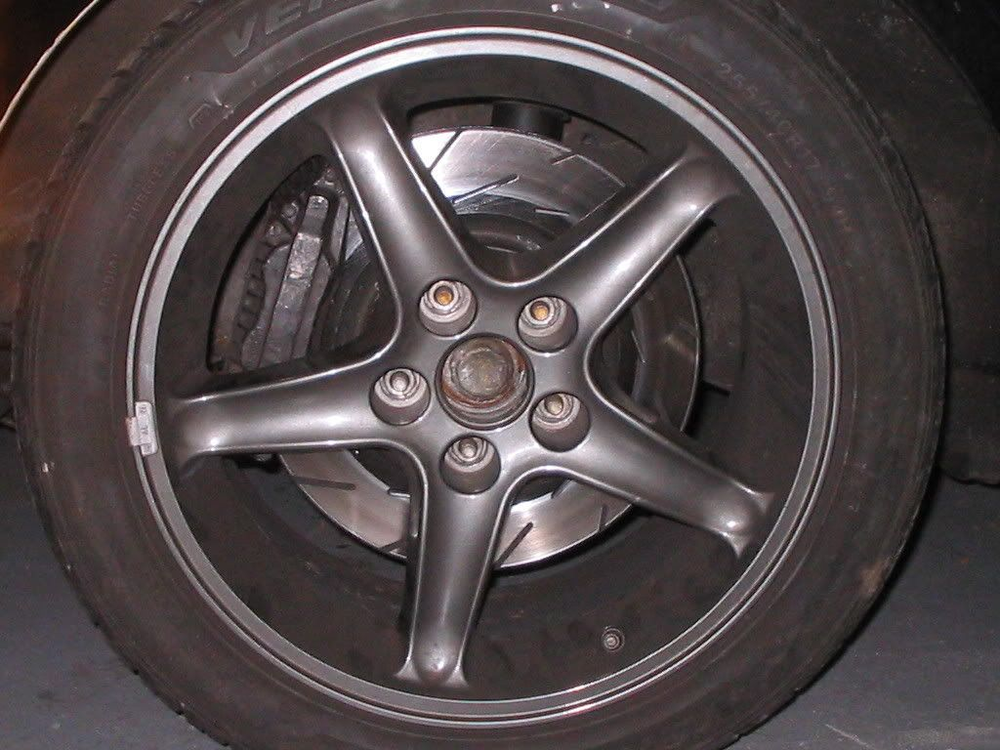
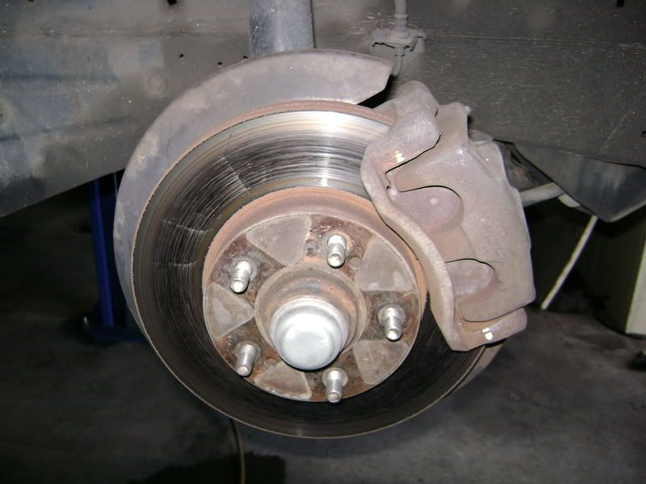
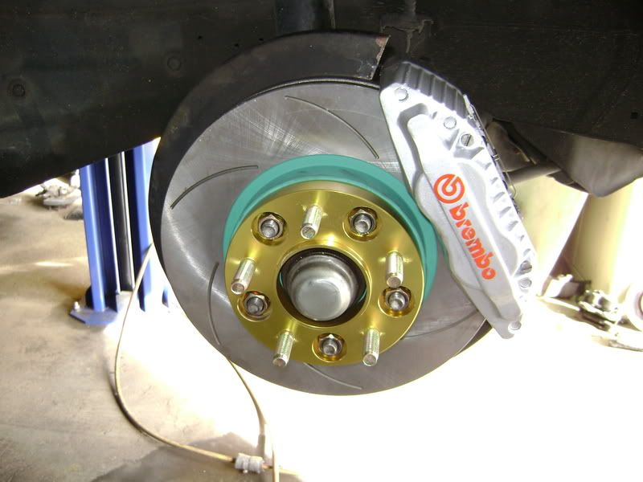
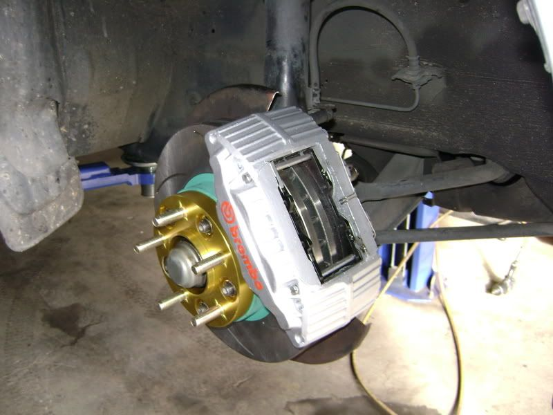
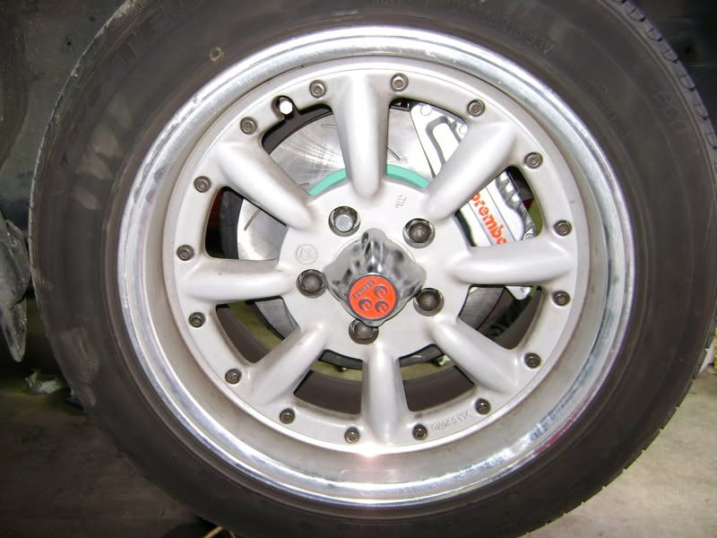
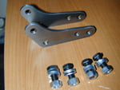

-
z -
My findings:
The z32 rear caliper on the 86 NA suspension isn't a good match after taking a closer look. The caliper bolts up fine, but the spacing just isn't there and the rotor thickness is way off as someone mentioned above. You can't use the thicker vented rotors without swapping to a later model control arm (87-89).
After seeing that it wouldn't work with the 86 NA suspension, I swapped in 88t rear control arms with 88t vented rotors. I bolted the caliper to the bracket with just using a lock washer on each side and the spacing is just about dead on (the rotor is centered in the middle of the caliper with pads). This should be the preferred way to do it.
PDM racing makes a conversion brake line kit for the 240sx guys putting on z32 brakes. I am using the front line in their kit for the rear setup in the z31. I just ordered their rear lines as I think I can route the lines better with a shorter length. I will try and put up some pics tonight. -
hey mark.. just a few comments on brake fade.. i was at limerock saturday.. its a 1.5 mile course with one serious braking zone and a few other sections that require small taps.. ive driven this track countless times and the brakes have always been fine.. yesterday was the first time i drove the track with the ammount power my car has now (329 horse, 411 torque) and the brakes faded after about 8 hard laps.. i have TT front calipers with brembo drilled TT rotors, rear z32 calipers on 88T vented disks. i use porterfield R-4S pads and ATE blue fluid. the first thing im going to do is try a set of R-4 full race pads, but im also looking into caliper adapters for bigger rotors, and finally getting my act together and making some ducting.mark86t wrote: I'm just curious as to who is getting brake fade using TT front brakes & 88 rear vented brakes???? I track & autocross my car with the TT fronts & 88 rears with NO brake fade whatsoever. My car rips down speed phenominally as well. 20 minute sessions on a 3.5 mile road course with 28 corners in the Vegas heat. No brake fade. I guess I would have to drive someones car with larger rotors (like 3000GT) and/or 350z front calipers and/or TT rear calipers to see if there is a difference. I don't even use the TT master cylinder. Just my stock 86t MC. Just curious who is experiencing brake fade. -
I have the same brake set up as you but run Motul brake fluid & Hawk HP plus pads. Last dyno I put down 330whp & 409wtq & run the 3.5 course at Pahrump. No brake fade as of yet. 90+ degree heat at the track as well. I have no brake ducting but I did make an underpan for the front of my car. Mostly to get air directed into the I/C & radiator but it does direct air into the wheel well & to the brakes.Chris86NA2T wrote:
hey mark.. just a few comments on brake fade.. i was at limerock saturday.. its a 1.5 mile course with one serious braking zone and a few other sections that require small taps.. ive driven this track countless times and the brakes have always been fine.. yesterday was the first time i drove the track with the ammount power my car has now (329 horse, 411 torque) and the brakes faded after about 8 hard laps.. i have TT front calipers with brembo drilled TT rotors, rear z32 calipers on 88T vented disks. i use porterfield R-4S pads and ATE blue fluid. the first thing im going to do is try a set of R-4 full race pads, but im also looking into caliper adapters for bigger rotors, and finally getting my act together and making some ducting.
**Oil cooler has since been moved from the wheel well to the front of the car for better heat transfer.
-
just wanted to share my experience with my recent front brake upgrade. my existing setup was z32 calipers and rotors on 87-89 turbo hubs. last spring i melted this setup as described earlier in this thread. i finally got around to making some changes
i purchased these adapters: http://www.jskinnovations.com/300zxCalBrkt.htm
and these rotors: http://www.autopartswarehouse.com/de…35USR7122.html
i also went from porterfield R4-S pads to straight R4s for the track
If you recall, in order to properly fit the TT calipers to the front of our cars they need to be shimmed slightly with a couple washers in order to center them over the rotors. the same thing applies here, except you need to put the shims between the adapters and the strut. as the web site for the adapters suggests, the entire pad comes in contact with the rotor. there is no pad overhang. in order to achieve this, you have to do some slight grinding on the inside of the caliper where it comes closes to the outer edge of the rotor.
one more important note is that the hat of the 350z rotor is slightly shorter than the stock or z32 rotors. this tucks your wheel a bit closer to the strut. i didnt take an exact measurement, but my guess would be no more than 3mm. here are before and after pictures:


now i can just barely get my fingers between the caliper and the inside of the wheel (i have pretty chubby fingers). i havent done much road testing yet, but everything feels fine so far. i have z32 rear calipers on the car with the stock z31 master cylinder. if i find that i have bias issues im going to first try a z32 master and then a proportioning valve. as of now i dont think there will be a need. so far i am very happy. i highly recommend the JSK adapters, the fitment was excellent. -
The new parts arrived from ArizonaZCar. Everything looks great and fits fine with the 84 hubs. The 66mm flange on the hub doesn't protrude very far past the new rotors, but Dave says it shouldn't be an issue.
Bled and road tested fine. Wow. Nice upgrade.*** Original Owner *** 1984 300zx Turbo 50th Anniversary Edition
CM SS 3" turbo-back exhaust, Apexi AVCR, BBS 3pc wheels, Bridgestone tires, Eibach springs, Tokico Illumina shocks, ArizonaZCar Wilwood 6-pot on 13" rotors, Cusco strut brace, Prothane kit, Autovation pedals, Alpine electronics -
I got a new Idea for mounting z32 rear brakes. The Infiniti M30 came with the same style rear suspension as the z31 but it had inboard drums for a parking brake. You may be able to use parts from the M30 to let z32 rear rotors bolt up.
This is just an idea I had and I haven't looked into it much, but somebody should check it out.
*I just looked back at some of the other threads and patzx300 posted his m30 with z32 brakes, but nobody really took notice. -
Also I just wanted to add this in.
http://www.gtrblog.com/index.php/2008/0 … e-g?blog=4
I'd assume this follows the same logic as the 350z brakes. If these fit the r32, which is the same as the z32, and the z32 brakes fit the z31, then these should fit the z31. -
OK mine are done, R32GTS-T calipers with Brembo decals on which I sourced from Japan. Project U SCR PurePlus 6 rotors, TRW Lucas pads and Lucas Grand Prix 600 brake fluid. 20mm hubcentric spacers for caliper clearance.
Before…

After…


 -
if anyone has these sitting around and could trace them out onto a sheet of paper for me and tell me how thick they are i may be able to get them cut and it would coast a hole lot less then the 150$ granted they wont look as pretty but hey that's what paint is for right. Only reason why I ask is because i have a set of VR-4 calipers and rotors sitting around not getting any use so figured i'd try to find something to do with them
300gt VR-4 Rotor adaptor kit, 12.5" rotor
 -
89 Black Z 5spd, tokico hp, msa springs, k&n cone, dynomax racemagnum muffler, stanza tb. -
Wilwood Write-up
z -
http://www.jskinnovations.com/300zxCalBrkt.htm
http://www.conceptzperformance.com/C…56193.93.136.9
Anyone know other companys that sells adapter that 350Z Brembo dics can be used?
[quote]zmech wrote:I send AZC email asking about rears. I suggested these ->Originally posted by jtz31ae
http://www.wilwood.com/Products/001-…-cpb/index.asp
He wasn't intrested using those, but didn't say if he is going to make with some other caliber.
I need to have working mechanical handbrake to pass year inspections.Jukka Kivinen - Europe / Finland - '88 Turbo 2+2 Targa
Datsun Nissan Sports Cars of Finland
http://www.z31turbo.com / http://www.z31na.com -
Just adapter i think.Neil86t wrote: What is the difference in the front kit for the Z32? In theory shouldn't it bolt up too?
Z32 is 99% bolt-on. You just need washers to move caliber back. Correct offset for brake disc and not even those washers are needed.Jukka Kivinen - Europe / Finland - '88 Turbo 2+2 Targa
Datsun Nissan Sports Cars of Finland
http://www.z31turbo.com / http://www.z31na.com -
Some good info that I don't want lost… credited 1sickz on find and DeleriousZ for rebuild links
Z32 quad-piston caliper rebuild information
z32 caliper rebuild how to:
http://www.nicoclub.com/articles.php?id=215854
link to small o-rings for caliper halves:
http://www.z1motorsports.com/product_in … ts_id=3018
full rebuild kit:
http://www.z1motorsports.com/product_in … cts_id=715
Rebuild (Nicoclub.com by 94_240sx)
Overview:
The 300ZX calipers are a popular upgrade from the 240sx, and most of the time, the calipers we get are used and worn… Not much of an upgrade if they don't work properly, right?
For the purposes of this article, we're going to rebuild some aluminum 30mm Z32 calipers. The 26mm calipers can be rebuilt using the same process.
Difficulty: ***
Time: 1-2 hours
Cost: < $20
Tools:
- socket wrenches
- breaker bar
Materials:
- brake cleaner
Remove clip from 2 pins in the back. Pins that are holding pads will slide out from the front.
Pads, clips and pins will come out easy and they will look like this.
If you just want to replace worn out or torn boots, you don't need to go further. Just remove boots, clean up and reinstall new boots, clips and pins that are included in most rebuilding kit.
If you want to powder coat your calipers, move on!!! I used breaker bar to remove big 4 bolts in the back. I stepped on the caliper and did this.
They were bolted on pretty tight.
Then remove 'O' clips and rubber boots that protect the pistons. You will also see 2 small 'O' rings between two halves. Everything is out except pistons in below picture.
Now, it's time to remove the pistons. I spoke with 4 different powder coating shops and all of them asked me to take the pistons out, so I can tell they don't want to powder coat calipers with pistons in.
Front half has 2 holes and the back has 3 holes. One on the back is for the brake line. You block holes and blow air in using air compressor. I used hand held 2HP compressor and it worked just fine. Get a trash can and put some newspaper and towel, so piston won't get damaged. They will come out loud and fast.
One piston will come out first, so use vice to hold that one and pop the other one. You really have to be careful here. You don't want to get hurt.
Picture of back half. There are rubber seals in the middle of the cylinders, so don't forget to take them out. Be careful and don't make any scratches on the cylinder wall.
al1IQ62w0470VaH4Jw.jpg" alt="" />
I cleaned them up really good and shipped these 8 pieces to powder coating shop.
Came back like this one week later.
This is the kit that I got from one of our Nissan OEM parts suppliers. This kit should be universal for all z32 front calipers. I had a used set of rear calipers, but they were in very good condition, so I didn't buy a kit for the rear.
New pistons, seals, boots, clips and 'O' rings…
This is the seal that goes in the middle of the cylinder.
Push the pistons back in like this.
Put small 'O' rings between 2 halves. Okay, here's the deal. These small 'O' rings were not included in the kit. I saw someone bought them from ACE Hardware store though. I just reused old ones. They seemed to be okay. You need to lubricate all the rubber parts.
Install new rubber boots, big 'O' clips and 4 bolts to complete.
86na - BlueZ
Shiro #366 - Kouki Monster
85t - Mr Tickles

 uioui
uiouiCopyright © 2006–. All rights reserved. Privacy Policy